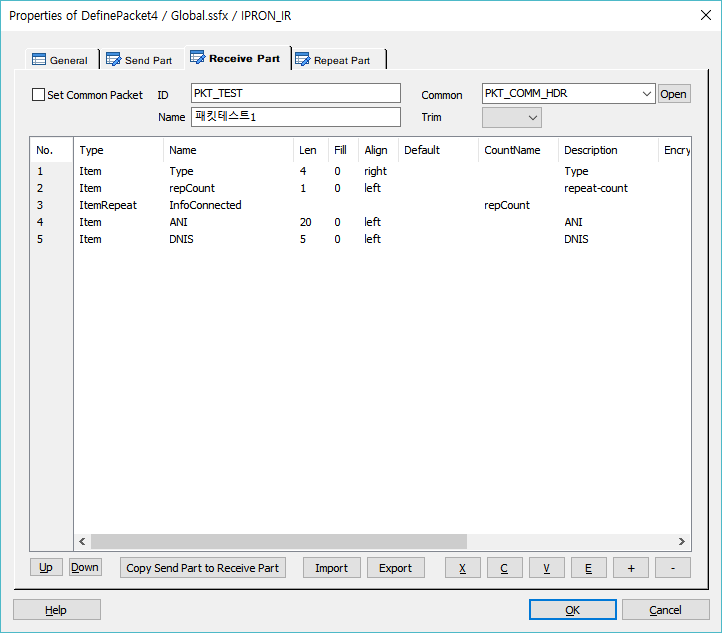
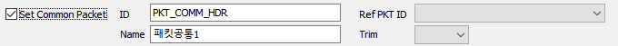
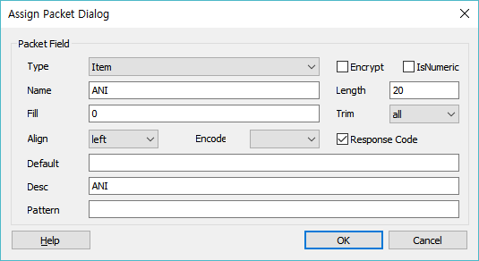
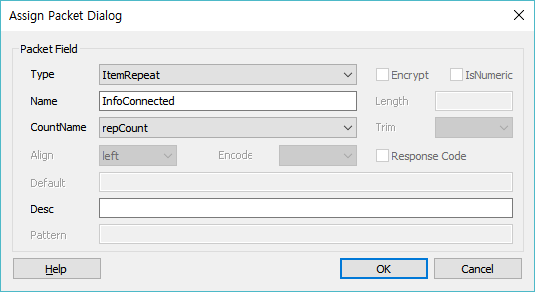

시나리오에서 사용할 전문정보를 전역으로 설정하여 시나리오 파일(.SSFX, .MSFX)에서 PacketCall Item을 사용하여 정의한 DefinePacket을 호출하여 사용 할 수 있습니다.
ICON

PROPERTIES

 Send Part : 전송할 전문의 필드를 구성 할 수 있습니다.
Send Part : 전송할 전문의 필드를 구성 할 수 있습니다.
 Receive Part : 받을 전문의 필드를 구성 할 수 있습니다.
Receive Part : 받을 전문의 필드를 구성 할 수 있습니다.
 Repeat Part : 반복할 전문을 정의 할 수 있습니다.
Repeat Part : 반복할 전문을 정의 할 수 있습니다.
Set Common Packet Check Box : 현재 설정하고 있는 전문을 공통 전문으로 설정 합니다. 체크 박스를 체크하면 Common Packet 설정 항목이 사라지고 이 공통전문을 참조하고 있는 Packet ID 리스트가 표시 됩니다.(Ref PKT ID 콤보박스에 리스팅된 Packet ID를 선택하면 해당 전문 속성창을 오픈합니다)

ID : Packet ID를 정의 합니다.(PacketCall Item에서 사용 합니다)
Name : Packet Name을 정의 합니다.(SWAT(운영관리)에서 사용 합니다.)
Common : 현재 전문에 이미 정의 되어있는 공통전문을 설정 합니다.(공통전문은 Packet Header에 해당 합니다)
Open Button : Common에 지정되어 있는 Packet ID에 해당하는 전문 속성창을 오픈합니다.
Trim : 전문 리스트 각 필드의 Trim속성의 값을 한번에 모두 설정합니다.
Up Button : 선택한 전문 필드의 위치를 위로 이동 합니다.
Down Button : 선택한 전문 필드의 위치를 아래로 이동 합니다.
Copy Send Packet to Recieve Packet Button : Send Part에 정의된 필드를 Receive Part로 복사 합니다.
Import Button : 파일에 작성된 전문을 불러 옵니다.(지정포멧)
Export Button : 작성한 전문을 파일로 내보냅니다.
X Button : 선택한 리스트를 잘라냅니다.(Ctrl+X)
C Button : 선택한 리스트의 내용을 복사 합니다.(Ctrl+C)
V Button : 복사한 리스트의 내용을 붙여넣기 합니다.(Ctrl+V)
E Button : 선택한 전문 필드의 내용을 수정 합니다. 전문 필드를 마우스 더블 클릭 해도 됩니다.(수정 창 팝업)
+ Button : 전문 필드를 추가 합니다.(추가 창 팝업)
- Button : 선택한 전문 필드를 리스트에서 삭제 합니다.

Type : 필드의 성격을 결정하는 것으로 4가지 유형의 Type이 있습니다.
Item : 기본 전문 필드
ItemRepeat, ItemRepeat2 : 반복부가 시작될 필드의 위치를 지정합니다.(Send Part, Receive Part)
ItemRepeatS, ItemRepeatS2, .. : Send 전문의 반복 부 데이터를 의미합니다.(Repeat Part)
ItemRepeatR, ItemRepeatR2, .. : Receive 전문의 반복 부 데이터를 의미합니다.(Repeat Part)
♣ 반복 부는 쵀대 9개 까지 지원합니다.
Name : 필드의 이름을 지정 합니다.
Encryption Check Box : 필드 값의 암호화 여부를 설정 합니다.
IsNumeric Check Box : 필드를 숫자형으로 바꿉니다.(Fill이 0으로 초기화 되고 Align이 Right로 설정 됩니다)
Length : 필드의 길이를 지정 합니다.
Fill : 필드에 기본적으로 채워질 값을 설정 합니다.(문자, 숫자 입력 시 Length 항목에 설정한 길이 만큼 채워지며, Fill의 데이터는 1바이트만 지정이 가능 합니다)
Trim : 받은 전문 필드에서 공백을 제거합니다.(none, left, right, all)
Align : 필드의 좌우 정렬을 지정 합니다.
Encode : 필드의 Encoding Type을 설정합니다.(default euc-kr)
Response Code Check Box : 체크하면 해당 필드는 응답코드 필드가 되어 SWAT 전문 테스트에서 응답코드 항목으로 지정할 수 있습니다.
Default : 필드에 기본값을 지정 합니다.(Fill로 채워진 경우는 Align에 따라 해당 사이즈 만큼만 Overwrite됩니다)
Desc : Description, 필드의 설명을 지정 합니다.
Pattern : Display Pattern, 필드의 값을 화면에 출력시 사용하는 패턴 입니다.(Packet ImportExport/Pattern)
CountName : Repeat 전문을 사용 할 시 반복될 Count가 있는 전문 필드 명을 지정 합니다.

RELATED